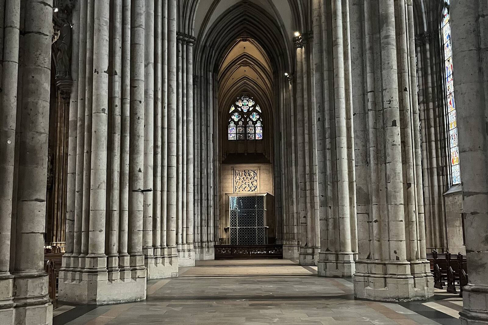
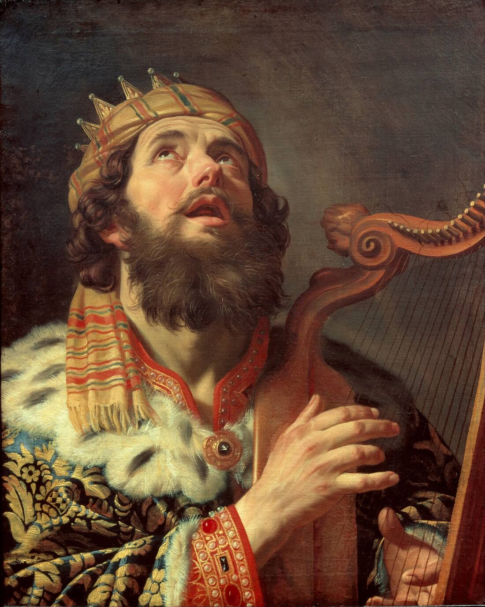

Christian visitor? Welcome.
Cologne Cathedral, Kaap bij Sneeuw · CC0 (public domain)

One question before anything else
Do you believe the Psalms are the inspired, God-breathed word of God?
Thank you for being honest. We believe they are, and you are just as welcome to pray them with us.
Thank you for being honest. We believe they are, and you are just as welcome to pray them with us.
The Psalms are holy ground we share. Paul wrote that “every Scripture is God-breathed” (2 Timothy 3:16).Exact WEB text Jesus prayed the Psalms all his life, even on the cross: “My God, my God, why have you forsaken me?” (Matthew 27:46, quoting Psalm 22:1).Exact WEB text
Many of you already have a living, daily relationship with God's word. You read it in the morning. You lean on it in hard times. We honor that, and we'd love to pray alongside you.
Christians today are divided, and the world is more divided still. So for a little while, let's set our divisions aside and simply sing to God together.
Almost every prayer time here is open to the public, and that includes you. You don't need to be Catholic. You don't need to ask anyone. Just come in and sit in the pews. See the times.
Many people today are looking for a spiritual tradition they can trust, something older than the latest trend. For about fifteen hundred years, Benedictine monks have prayed the Psalms together, day after day. That prayer is open to you.
Singing the Psalms with us doesn't ask you to accept anything you don't believe. What follows is simply how one Benedictine monk prays them. Take what helps you.


How do you use the Psalms now?
Then you have a treasure waiting. Start with “What is a psalm?” below.
Wonderful. Singing them with others is a whole new way to know them.
Then you'll feel right at home here. The Psalms are the backbone of our day.
Have you heard of the Liturgy of the Hours, sometimes called the Divine Office?
It's simply a set of prayers at fixed times of day, mostly psalms. The idea comes straight from the Bible. See below.
Good. Below is a short reminder, and how we do it here.
Then you know the shape of it. Here's how our choir sings it.
A few short explanations
Open any that help. The ones marked “For you” match your answers.
What is a psalm?
A psalm is a prayer-song. The Book of Psalms holds 150 of them: poems written to be sung. Some shout for joy. Some weep. Some are angry, some afraid, some full of thanks.
The Psalms are something like the whole Bible in one book. Saint Athanasius, a bishop of the 300s, wrote that the Book of Psalms is “like a garden” holding things from every other part of Scripture, and that it “sets them to music.”Check: Athanasius, Letter to Marcellinus 2 — wording varies by translation Creation, the Exodus, the kings, the exile: Israel's whole story is in there, turned into prayer.
And they look forward. Jesus said, “All things which are written in the law of Moses, the prophets, and the psalms concerning me must be fulfilled” (Luke 24:44).Exact WEB text So the Psalms stand like a bridge between the Old Testament and the New.
Because they are poetry, they hold more than plain prose can. A poem packs many meanings into a few words, and you can come back to it for years and still find something new. Hebrew poetry also likes to speak in pairs: one line says something, and the next line echoes it, often making it stronger. That's one reason the Psalms are so natural to sing back and forth.
What is the Liturgy of the Hours?
It's a round of prayer at set times through the day, made mostly of psalms. It's also called the Divine Office. (“Office” here means a duty or service.) Each prayer time is called an “hour,” even though most take much less than an hour.
The idea runs all through the Bible. “Seven times a day, I praise you” (Psalm 119:164). Daniel knelt to pray “three times a day” (Daniel 6:10). Peter and John went to the temple “at the hour of prayer” (Acts 3:1), and Peter went up on a housetop “to pray at about noon” (Acts 10:9).Exact WEB text (all four) Paul told the first Christians, “Pray without ceasing” (1 Thessalonians 5:17).
Here, the main hours are Matins and Lauds (early-morning prayer and morning praise, prayed together), Sext (midday prayer), Vespers (evening prayer), and Compline (night prayer before sleep). See the times.
How our choir sings
The monks stand in choir, facing each other across the aisle. Two monks, called chanters, stand and give the starting note, and together they sing the first verse. Then the whole community answers with the next verse. Back and forth it goes, through the whole psalm. Our psalms are sung in English.
Something to listen for: little by little, the pitch tends to sink. Then the chanters lift it again.
You don't need to know when to stand or sit. Do what feels natural, or follow the people around you.
What to expect when you come
- Come in quietly and sit in the pews.
- Please silence your phone.
- Almost every prayer time is open to the public. (On Wednesdays and Sundays, the monks pray Compline privately.)
- Sing along, or simply listen.Decide: may guests sing along?
- You'll hear some hymns to Mary and prayers honoring saints. Read our honest note.
How do I find my place in the book?
Our book numbers the psalms the older way, which is often one lower than in most Bibles. Our guide explains this and walks you through it step by step. How to follow along in our book →
Pick up the phone
How one Benedictine monk prays the Psalms
Imagine an old telephone in a museum, behind a velvet rope. Everyone walks past it. But what if you picked it up, and someone answered?
Scripture says, “The word of God is living and active” (Hebrews 4:12).Exact WEB text The Catholic Church says it this way: “in the sacred books, the Father who is in heaven meets His children with great love and speaks with them.”Checked: Dei Verbum 21, vatican.va
So here is what I do. In choir, the chanters sing one verse and the community answers with the next. I hear one verse as my own voice, and the next as God answering me.
Two rules keep this honest. First, I never change the words of the psalm. Second, the answer I hear is my own meditation, a quiet back-and-forth with God. It isn't a new translation, and it isn't a claim about what the psalm's writer meant. The paired lines of Hebrew poetry simply invite me to listen for a reply.
A short example
“Be still and know that I am God,
supreme among the nations, supreme on the earth!”
 I prayAll right, Lord. I'm putting the phone down. I'm turning off the news. I'm listening.
I prayAll right, Lord. I'm putting the phone down. I'm turning off the news. I'm listening.
The Lord of hosts is with us:
the God of Jacob is our stronghold.
 I hear God sayI walked with Jacob when he ran from home with nothing. I'm walking with you, too. I haven't left.
I hear God sayI walked with Jacob when he ran from home with nothing. I'm walking with you, too. I haven't left.
Every call is different. Some days it is sorrowful; other days it is full of joy.
Come and sing with us
Almost every prayer time in this church is open to you. Come for one, and stay as long as you like.
And if you find yourself wanting more, there's a path for that too. Our oblates, Catholic and Protestant, follow the Rule of Saint Benedict in their own homes and work, and join their prayer to ours.
Questions? Only if you want them.
Many visitors carry a few honest questions about Catholics. You don't need answers to any of them to sing with us. But if you'd like, start here.
Are Catholics Christians?
A fair question. Here's our answer, in the Church's own words.
You're right. Here's a little more, in the Church's own words.
That's honest. Here's our answer, in the Church's own words.
Are Catholics Christians?
Yes. We believe in one God: Father, Son, and Holy Spirit. We believe Jesus Christ is true God and true man, who died for our sins and rose from the dead. We are baptized in his name, and every Sunday we stand and say the Nicene Creed, the same creed many Protestant churches use.
And here is how the Catholic Church speaks about baptized Christians who are not Catholic. She says that they “have a right to be called Christians, and with good reason are accepted as brothers in the Lord by the children of the Catholic Church.”Checked: CCC 818, vatican.va
We won't pretend there are no differences. The Catholic Church believes that the Church Christ founded “subsists in the Catholic Church,” and she calls the bond between us real but “imperfect.”Checked: Lumen Gentium 8; CCC 838, vatican.va But she also teaches that “many elements of sanctification and of truth” are found outside her visible boundaries, and the very first one she names is “the written Word of God.”Checked: CCC 819, vatican.va That written Word is what we'll be singing together.
Still not convinced? Don't worry about that for now. Come sing with us and worship God.
Other common questions
Do Catholics worship Mary?
No. Worship, in the full sense of adoration, belongs to God alone. Catholics honor Mary, the way Elizabeth did when she said, “Blessed are you among women” (Luke 1:42), and the way Mary herself said would happen: “all generations will call me blessed” (Luke 1:48).Exact WEB text (both)
The Catechism draws the line clearly. Our devotion to Mary, it says, “differs essentially from the adoration which is given to the incarnate Word and equally to the Father and the Holy Spirit.”Checked: CCC 971, vatican.va
Mary always points away from herself. Her last words in the Gospels are about her Son: “Whatever he says to you, do it” (John 2:5).Exact WEB text
Still not convinced? Don't worry about that for now. Come sing with us and worship God.
Why do Catholics pray to the saints?
For the same reason you might ask a friend to pray for you. Scripture says, “The insistent prayer of a righteous person is powerfully effective” (James 5:16). We believe that Christians who have died are not gone, because God “is not the God of the dead, but of the living” (Mark 12:27). They are the “great cloud of witnesses” (Hebrews 12:1), and in heaven they offer “the prayers of the saints” (Revelation 5:8).Exact WEB text (all four)
So we ask them to pray for us. The Catechism says the saints “do not cease to intercede with the Father for us,” and it adds that they do this “through the one mediator between God and men, Christ Jesus.”Checked: CCC 956, vatican.va Christ stays at the center. The saints are friends who pray alongside us.
Still not convinced? Don't worry about that for now. Come sing with us and worship God.
Why all the statues and pictures?
For the same reason you might keep a photo of someone you love. You don't love the paper; you love the person.
The Catechism says, “the honor rendered to an image passes to its prototype” — that is, to the person the image shows. It calls this “respectful veneration,” and it says plainly that this is “not the adoration due to God alone.”Checked: CCC 2132, vatican.va
God himself told Moses to make images for the place of worship: “You shall make two cherubim of hammered gold” (Exodus 25:18).Exact WEB text Beauty has always been one way of praising God.
Still not convinced? Don't worry about that for now. Come sing with us and worship God.
Do Catholics read the Bible?
To a monk, this is almost a funny question. Come and pray with us, and you'll see for yourself: we hardly stop reading it.
In the monks' daily prayer. Nearly every prayer time is made of Scripture. There are the Psalms, sung back and forth until many of us know them by heart. There are the canticles, songs from other parts of the Bible, like Zechariah's song in the morning and Mary's Magnificat in the evening. At Matins, early in the morning, a monk reads a longer passage of Scripture aloud, and then we sit in silence to let it sink in. The other hours each have a short Bible reading too.From the abbey's page on the Divine Office
At Mass. Every Mass has a Liturgy of the Word. On Sundays there are usually four passages: one from the Old Testament, a psalm, one from a New Testament letter, and one from a Gospel. These follow a set plan called the lectionary. Over three years of Sundays, the Church reads through the Gospels of Matthew, Mark, and Luke in turn, with John in Lent and Easter. Weekdays follow a two-year plan of their own.Checked: USCCB, “Questions about the Lectionary” The Second Vatican Council asked for exactly this: “The treasures of the bible are to be opened up more lavishly, so that richer fare may be provided for the faithful at the table of God's word.”Checked: Sacrosanctum Concilium 51, vatican.va and Lumina
So the passage isn't chosen by the preacher's favorite verses. The whole Church reads the same passages on the same day, all over the world. Over the years you hear a wide sweep of the Bible, the hard passages along with the well-loved ones. (Many Protestant churches follow a similar plan, the Revised Common Lectionary, which grew out of the Catholic one.)Check: the Revised Common Lectionary (1992) was adapted from the 1969 Roman Lectionary
Many Christians read the Bible faithfully on their own, and that is a beautiful thing. Catholics do too. But there is also a gift in reading it with the Church, the way a child learns at the family table. The Catechism says that “because we receive the life of faith through the Church, she is our mother … Because she is our mother, she is also our teacher in the faith.”Checked: CCC 169, Lumina And it quotes Saint Jerome, who translated the Bible into Latin: “Ignorance of the Scriptures is ignorance of Christ.”Checked: CCC 133, vatican.va
To be honest about where we differ: Catholics believe God's word comes to us through Scripture and Tradition together, the two “flowing out from the same divine well-spring.”Checked: CCC 80, vatican.va Paul wrote, “hold the traditions which you were taught by us, whether by word or by letter” (2 Thessalonians 2:15).Exact WEB text But no Catholic teaching asks you to put the Bible down. Quite the opposite.
Still not convinced? Don't worry about that for now. Come sing with us and worship God.
Do Catholics think they can earn their way to heaven?
No. The Catechism says, “Our justification comes from the grace of God. Grace is favor, the free and undeserved help that God gives us.” And it says that “no one can merit the initial grace of forgiveness and justification.”Checked: CCC 1996 and 2010, vatican.va Paul put it this way: “by grace you have been saved through faith, and that not of yourselves; it is the gift of God” (Ephesians 2:8).Exact WEB text
The Catechism even quotes Saint Thérèse of Lisieux, a much-loved Catholic saint: “In the evening of this life, I shall appear before you with empty hands, for I do not ask you, Lord, to count my works.”Checked: CCC 2011, vatican.va Good works matter to Catholics, but as the fruit of grace, not the price of it.
Still not convinced? Don't worry about that for now. Come sing with us and worship God.
Do Catholics sacrifice Jesus again at every Mass?
No. Christ was offered “once for all” (Hebrews 10:10).Exact WEB text The Mass doesn't repeat the cross or add to it. The Catechism says the Mass “re-presents (makes present) the sacrifice of the cross,” and that “the sacrifice of Christ and the sacrifice of the Eucharist are one single sacrifice.”Checked: CCC 1366 and 1367, vatican.va
Think of it this way: it isn't a second sacrifice. It is the one sacrifice of Calvary, made present to us here and now.
Still not convinced? Don't worry about that for now. Come sing with us and worship God.
Why do Catholics confess to a priest?
First, the Catechism is clear: “Only God forgives sins.” But it adds that Jesus gave this power “to men to exercise in his name.”Checked: CCC 1441, vatican.va On Easter evening, Jesus breathed on his apostles and said, “Receive the Holy Spirit! If you forgive anyone's sins, they have been forgiven them” (John 20:22–23).Exact WEB text
There's something deeply human about it too. James wrote, “Confess your sins to one another” (James 5:16). Saying it out loud, and hearing out loud that you are forgiven, sets people free.
Still not convinced? Don't worry about that for now. Come sing with us and worship God.
What about the Pope?
Catholics believe Jesus gave Peter a special role: “you are Peter, and on this rock I will build my assembly” (Matthew 16:18).Exact WEB text The Pope is the bishop of Rome, Peter's successor. The Catechism calls him “the perpetual and visible source and foundation of the unity” of the Church.Checked: CCC 882, vatican.va
Some people think Catholics believe the Pope can never be wrong about anything. That isn't Catholic teaching. The Church teaches that God protects the Pope from error only in a narrow case: when he solemnly and definitively proclaims a teaching on faith or morals for the whole Church.Checked: CCC 891, vatican.va The rest of the time, he is a man and a sinner like the rest of us, who also goes to confession.
Still not convinced? Don't worry about that for now. Come sing with us and worship God.
May I come to Mass if I'm not Catholic?
Yes! Anyone may come to Mass: Christians of every kind, people of other faiths, people with no faith at all. You don't need to be Catholic, and no one will ask. See the Mass times.
At Communion time, you're welcome to come forward with your arms crossed over your chest. That shows the priest you'd like a blessing instead of Communion, and he will bless you. Or you may simply stay in your pew and pray.Confirm: the arms-crossed sign is the custom at the abbey
A blessing is a real gift. The Catechism counts blessings among the “sacramentals,” and it says that “by the Church's prayer, they prepare us to receive grace and dispose us to cooperate with it.”Checked: CCC 1670 and 1671, Lumina In plain words: a blessing is the Church praying over you, asking God to help you on your way, wherever you are on the road.
Still not convinced? Don't worry about that for now. Come sing with us and worship God.
If I come to Mass, may I receive Communion?
This one is practical, and we want to be honest and kind about it. The Catholic bishops of the United States say: “We welcome our fellow Christians to this celebration of the Eucharist as our brothers and sisters.” Then they explain that because Catholics see Communion as a sign of full unity in faith, “members of those churches with whom we are not yet fully united are ordinarily not admitted to Holy Communion.”Checked: USCCB, Guidelines for the Reception of Communion
So we ask you not to receive. Instead, the bishops invite you to pray in your heart for unity, the same unity Jesus prayed for: “that they may all be one” (John 17:21).Exact WEB text That prayer is something we can share with you completely.
None of this applies to the Liturgy of the Hours. There, everyone sings the same psalms together.
Still not convinced? Don't worry about that for now. Come sing with us and worship God.
Do I have to become Catholic to come?
No. You don't have to become anything. You don't have to sign anything, join anything, or tell anyone who you are. Saint Benedict wrote in his Rule that every guest who comes should be welcomed as Christ.Check: Rule of St. Benedict ch. 53 — the abbey's website quotes it as “All guests who present themselves are to be welcomed as Christ” That includes you.
Still not convinced? Don't worry about that for now. Come sing with us and worship God.